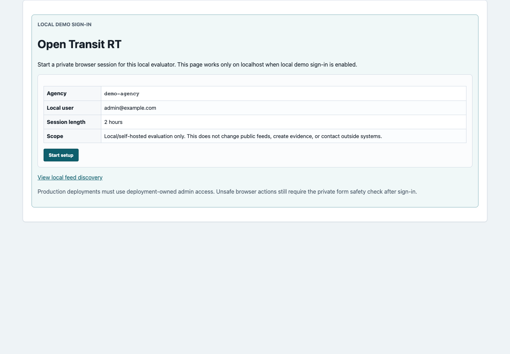
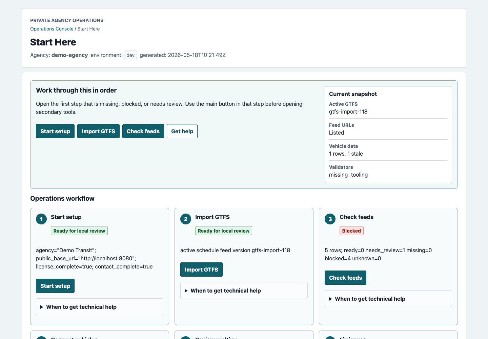
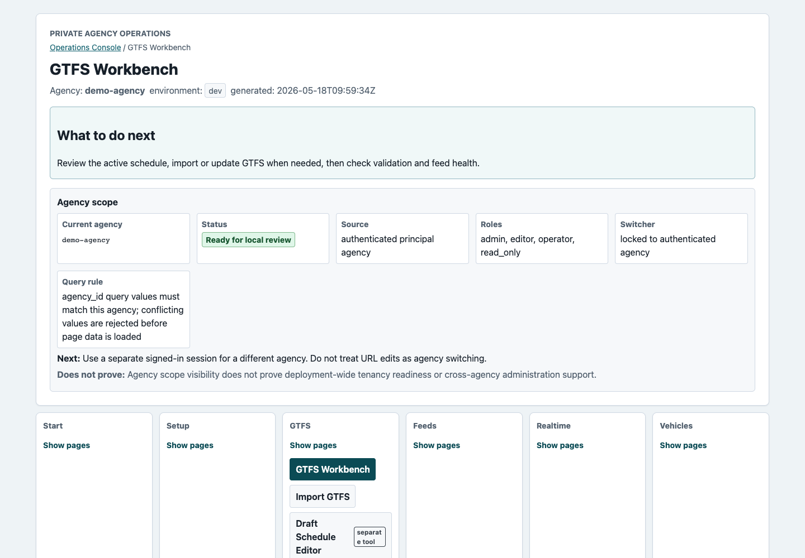
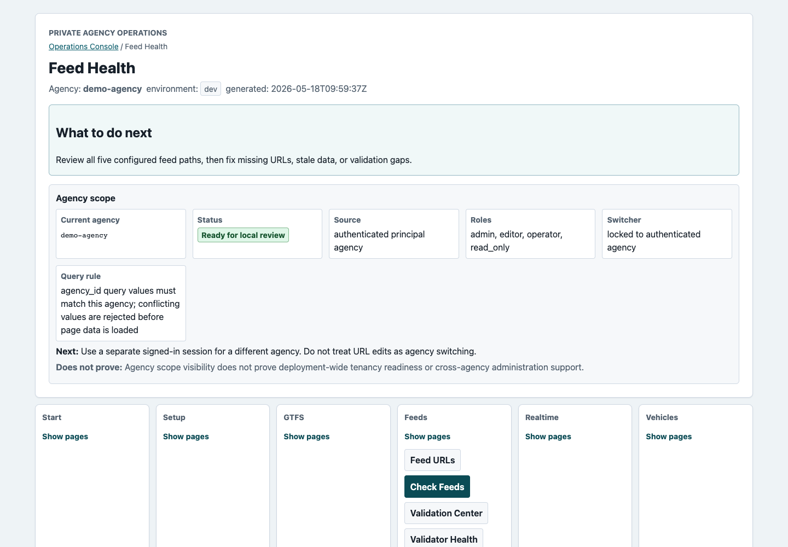
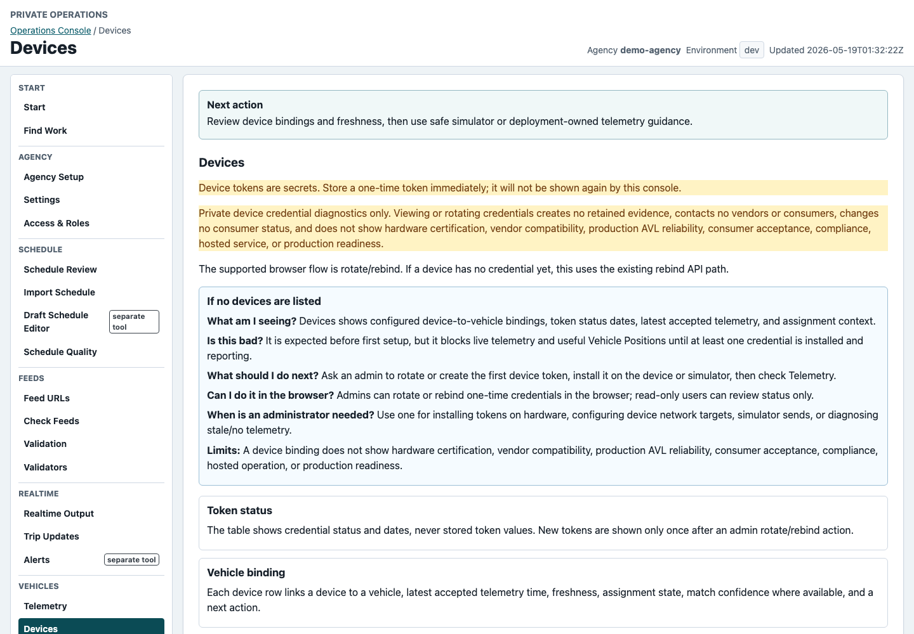
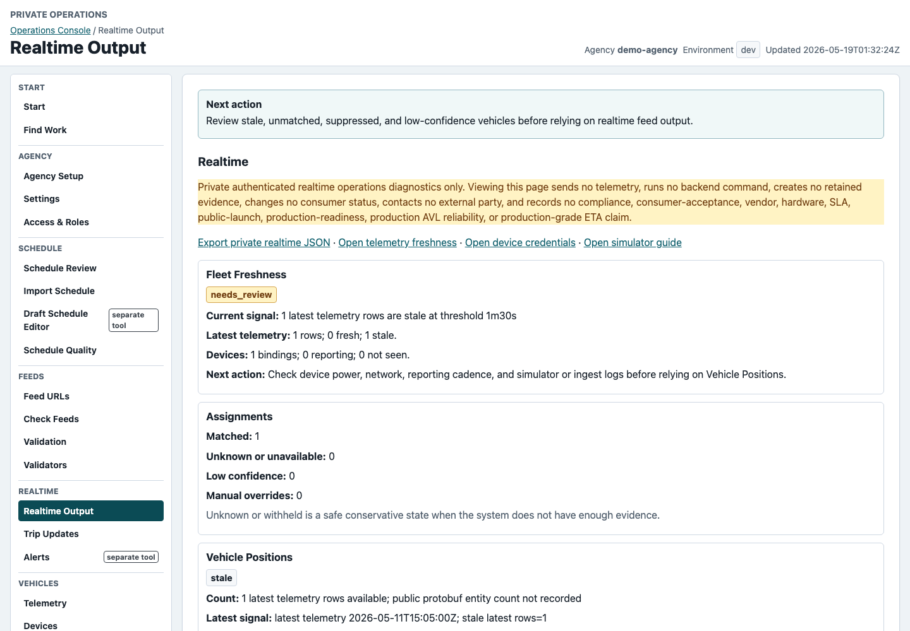
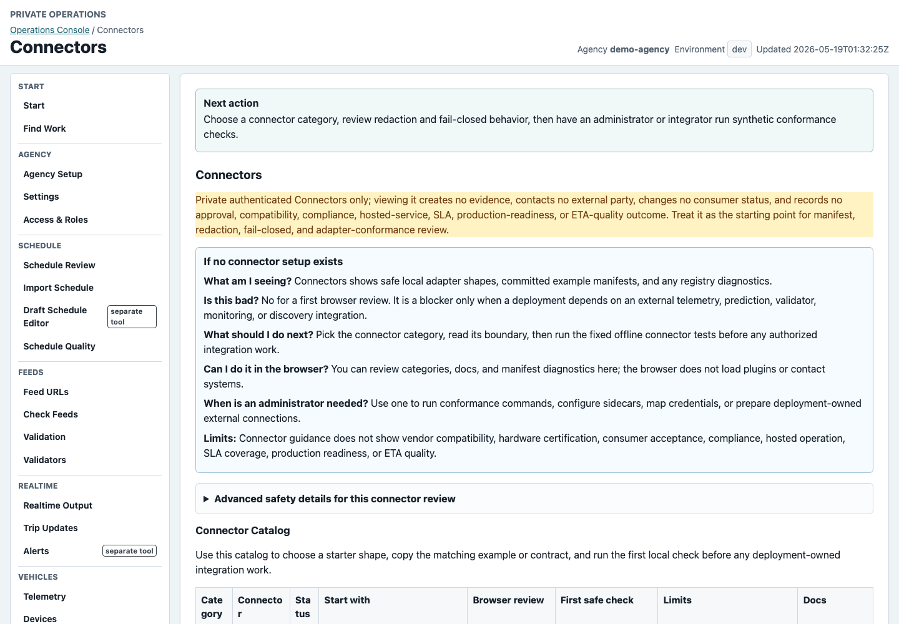
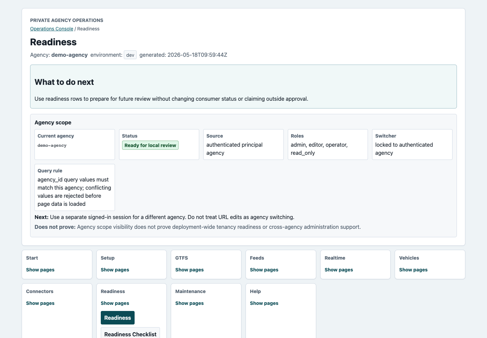
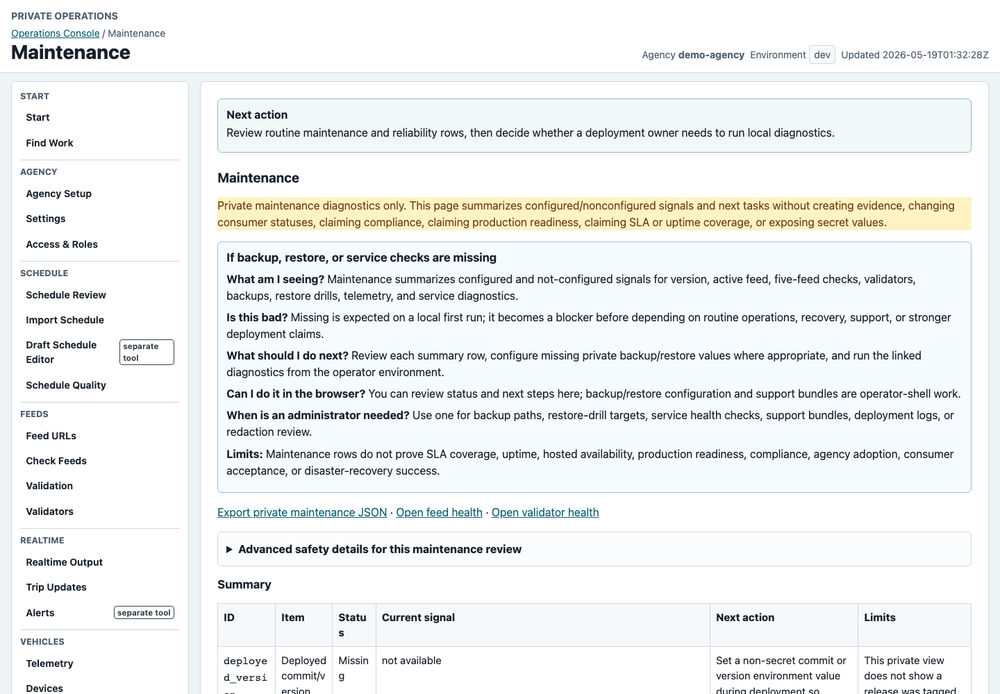
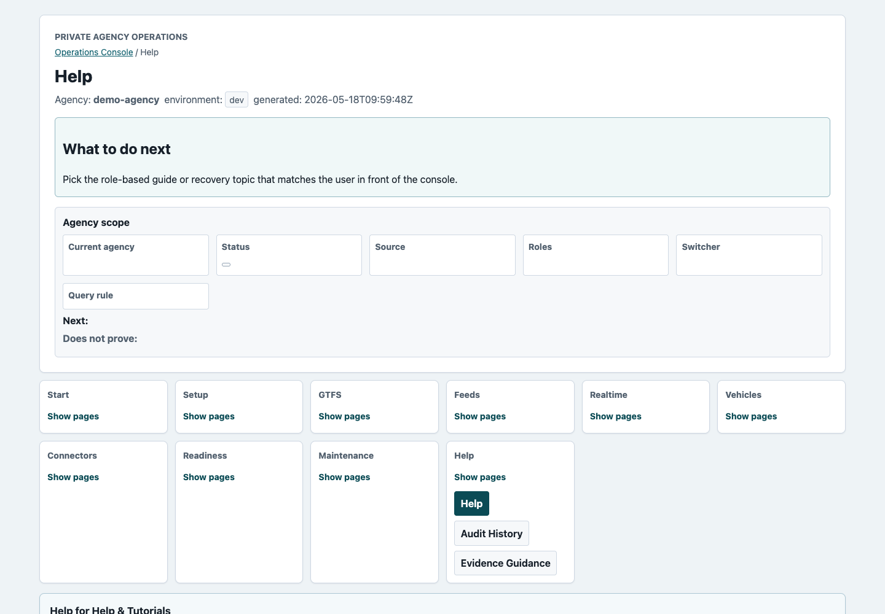

Browser tour
Tour the operator workflow.
The Operations Console is organized around a simple sequence: start setup, import GTFS, check feeds, connect vehicles, review realtime, fix issues, share URLs, and maintain the system.
Actual Browser Screens

Start without tokens
Staff open the local page and choose Start setup.

Follow the workflow
The console opens with ordered steps and one main action per step.

Review the schedule
Check active feed version, required files, import history, and validation guidance.

Review five URLs
Check discovery, schedule, Vehicle Positions, Trip Updates, and Alerts.

Review device setup
See device bindings and next steps without showing stored token values.

Check live feed state
Review stale vehicles, Vehicle Positions, Trip Updates diagnostics, and Alerts.

Pick a safe path
Start from local-supported connector categories before real endpoints are configured.

See what needs attention
Use system checks to decide the next user action or technical-helper task.

Plan routine checks
Review backup, restore, support, and deployment-owner tasks.

Find the right owner
Use task help when a page is empty, blocked, or needs technical setup.
Use The Tour For Evaluation
The UI helps local and self-hosted evaluation. It does not create evidence, contact consumers or vendors, prove public launch, or replace deployment-owned review.